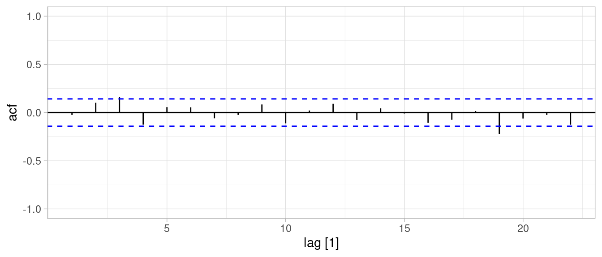
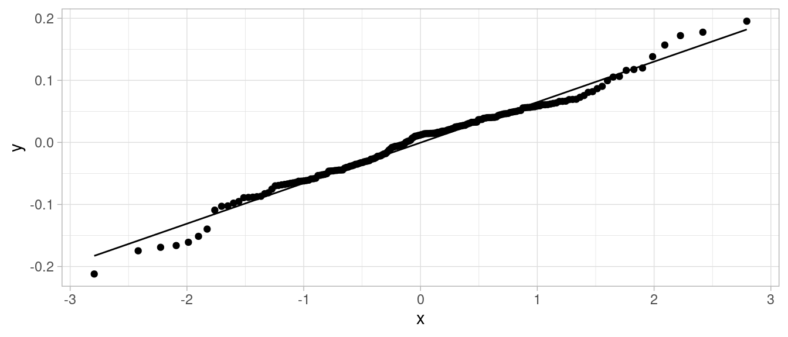

Código
library(tidyverse)
library(kableExtra)
library(DiagrammeR)
library(CausalImpact)
locale <- Sys.setlocale("LC_TIME", "es_ES.UTF-8")
library(lubridate)
library(fpp3)
ggplot2::theme_set(ggplot2::theme_light())library(tidyverse)
library(kableExtra)
library(DiagrammeR)
library(CausalImpact)
locale <- Sys.setlocale("LC_TIME", "es_ES.UTF-8")
library(lubridate)
library(fpp3)
ggplot2::theme_set(ggplot2::theme_light())Muchas veces podemos simplificar modelos utilizando transformaciones de la serie de tiempo que nos interesa.
Una común es que la variación de la serie de tiempo es proporcional a su nivel. Consideramos el ejemplo de Forecasting: PP de datos mensuales de costo de medicinas para diabetes en Australia:
data(PBS)
a10 <- filter(PBS, ATC2 == "A10") |>
select(Month, ATC2, ATC2_desc, Scripts, Cost) |>
summarise(Scripts = sum(Scripts), Cost = sum(Cost))
autoplot(a10, Cost) +
labs(y = "$ (millones)",
title = "Ventas de medicinas para diabetes")En este caso, podemos ver que la variabilidad de la serie (incluyendo patrones de estacionalidad) es mayor cuanto mayores valores toma. Aunque es posible modelar esto explícitamente, puede ser más simple modelar el logaritmo de esta serie (es decir, nuestro modelo de observaciones es multiplicativo en la observación original, en lugar de aditivo):
data(PBS)
a10 <- a10 |>
mutate(log_Costo = log(Cost))
autoplot(a10, log_Costo) +
labs(y = "$ (millones)",
title = "Ventas de medicianas para diabetes") Una vez que transformamos a modelo multiplicativo, la variabilidad de la serie es más regular a lo largo del periodo de modelación. Otras posibilidad común es transformar usando la raíz cuadrada:
data(PBS)
a10 <- a10 |>
mutate(sqrt_Costo = sqrt(Cost))
autoplot(a10, sqrt_Costo) +
labs(y = "$ (millones)",
title = "Ventas de medicianas para diabetes") Utilizaremos la transformación logarítmica. Es importante notar que cuando hacemos transformaciones, es necesario tener cuidado en la transformación inversa para regresar a unidades originales:
modelo_diabetes <- AddLocalLinearTrend(list(), a10$log_Costo) |>
AddSeasonal(nseasons = 12, a10$log_Costo)
ajuste_1 <- bsts(a10$log_Costo, modelo_diabetes,
niter = 10000, ping = 5000)=-=-=-=-= Iteration 0 Wed May 10 17:28:01 2023 =-=-=-=-=
=-=-=-=-= Iteration 5000 Wed May 10 17:28:19 2023 =-=-=-=-=plot(ajuste_1)pred_errors_tbl <-
ajuste_1$one.step.prediction.errors |>
t() |> as_tibble() |>
mutate(t = 1:nrow(a10)) |>
pivot_longer(-c(t), names_to = "sim", values_to = "valor") |>
group_by(t) |>
summarise(valor = mean(valor)) |>
as_tsibble(index = t)Warning: The `x` argument of `as_tibble.matrix()` must have unique column names if
`.name_repair` is omitted as of tibble 2.0.0.
ℹ Using compatibility `.name_repair`.ACF(pred_errors_tbl[-c(1:12), ]) |>
autoplot() + ylim(c(-1,1))Response variable not specified, automatically selected `var = valor`
ggplot(pred_errors_tbl |> filter(t > 12)) +
geom_qq(aes(sample = valor)) +
geom_qq_line(aes(sample = valor))
Podemos producir pronósticos de la siguiente forma (por ejemplo si queremos predecir con las medias de la posterior predictiva) :
sims_log_pred <- predict(ajuste_1, horizon = 12)
dim(sims_log_pred$distribution)[1] 9320 12pronostico_puntual_media <- exp(sims_log_pred$distribution) |>
apply(2, mean)
pronostico_puntual_media [1] 24100766 25155253 24601978 26570038 28431381 30256056 34423827 21398438
[9] 22616409 23282067 25950765 24495144Los intervalos de percentiles podemos simplemente transfomarlos directamente:
sims_log_pred$interval |> exp() [,1] [,2] [,3] [,4] [,5] [,6] [,7] [,8]
2.5% 21249040 22086581 21517687 23177038 24623379 26239435 29712793 18354603
97.5% 27266035 28574442 27909914 30267062 32494364 34842481 39591539 24667170
[,9] [,10] [,11] [,12]
2.5% 19298528 19925555 21885715 20655164
97.5% 26220729 26971849 30291291 28584307Cuando usamos usamos como pronóstico el valor esperado de la serie transformada, aplicar la transformación inversa no nos da en general el valor esperado de serie sin transformar.
Pueden aplicarse correcciones (ver por ejemplo aquí). Si tenemos simulaciones individuales para la cantidad de interés, podemos aplicar a cada simulación la transformación y después resumir apropiadamente (por ejemplo, la media).